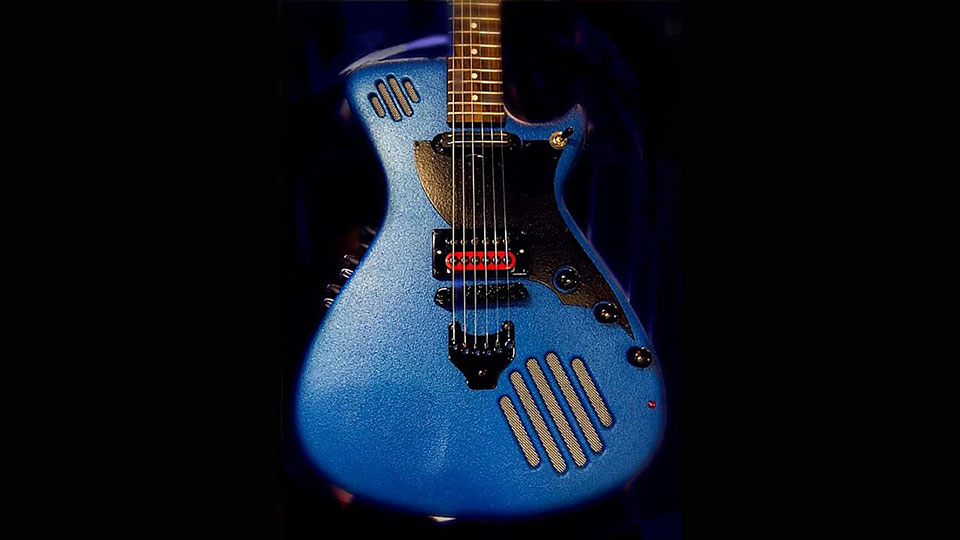

Guitarras auto-amplificadas Vx™

As guitarras Vx™ são projetadas e construídas em São Paulo, SP, Brasil. Usamos maquinário automatizado moderno e artesanato manual do velho mundo para criar um instrumento de precisão que também é uma obra de arte inspiradora.